¿Qué es Instagram?
Instagram es una plataforma digital centrada en la interacción de sus usuarios por medio de la creación de contenido en distintos formatos. Que con el paso del tiempo desde su lanzamiento, se ha adaptado para fomentar el consumo de información de productos y servicios y seguimiento de tendencias de forma continua, influyendo significativamente en como los usuarios viven la experiencia dentro de la plataforma.
Sin embargo, la forma en que está estructurada genera una experiencia basada en la inmediatez y la continuidad infinita, donde el sistema aprende de sus interacciones para fomentar su permanencia. Que a su vez, crea fenómenos que generan la sensación de urgencia por mantenerse actualizado dentro de la plataforma. Siendo una problemática significativa al llegar a dificultar una relación consciente y equilibrada entre el usuario y la aplicación.
Mapa Sistémico

En la elaboración del mapa sistémico, decidimos concentrarnos en los flujos que conectan a los actores humanos como usuarios y creadores de contenido con los no humanos (Instagram, empresas externas data centers, etc). Así, logramos identificar la concentración del poder en la aplicación y en empresas externas; adjudicándose el mayor flujo de datos y dinero. Incluimos a dichas empresas externas, ya que a pesar de no generar un flujo directo de atención, se ven directamente beneficiadas con el flujo de dinero por compras y publicidad. Destacamos igualmente los aspectos relativos al flujo de datos identificando a los usuarios como los únicos que no reciben nada más que flujos de atención pensados para el consumo a cambio de la cantidad de datos que generan y entregan deliberadamente a un sistema que se beneficia y se sostiene a base de ellos.
Scripts inscritos en el diseño
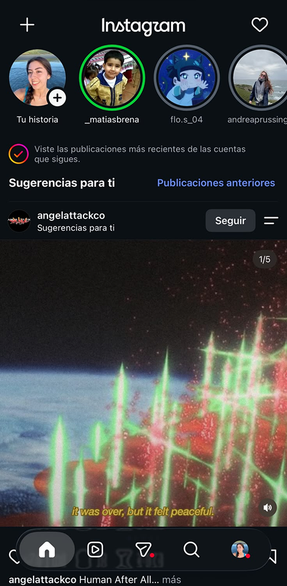
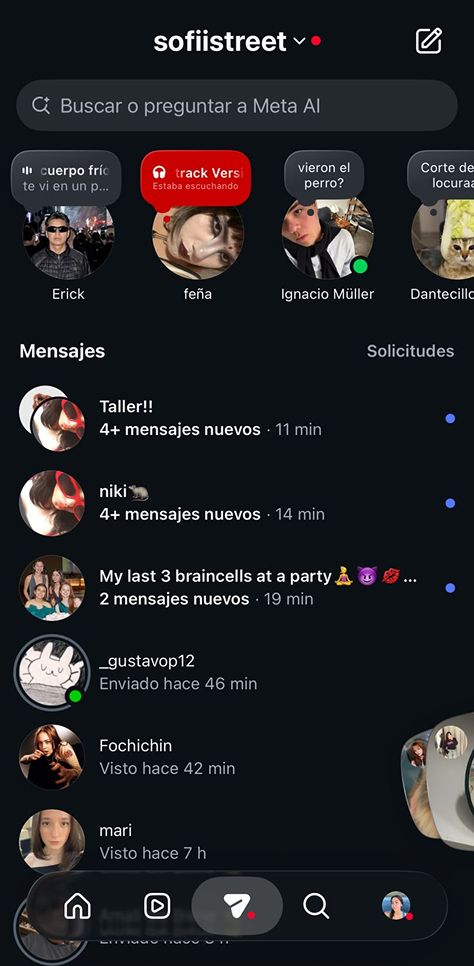
"No te pierdas ninguna novedad"
- Materialización técnica: Contenido que permanece visible por 24 horas (historias, notas, instantáneas), feed de contenido personalizado infinito que se refresca, notificaciones, mensaje de “Estás al día” cuando has visto todas las publicaciones de los últimos 2 días, publicaciones más recientes aparecen arriba.
- Comportamiento que incentiva: Necesidad de revisar instagram repetidamente, scrolleo sin control durante largos periodos de tiempo, FOMO (sentimiendo de miedo o ansiedad por perderse de algo).
- Valores bajo los que opera: Inmediatez, hiperconectividad, eficiencia extrema
- Actores beneficiados: La interacción recurrente y durante extensos periodos de tiempo por parte de los usuarios, beneficia directamente a la plataforma de Instagram, ya que implica un mayor “engagement” del público, o sea un mayor uso de los servicios; también a entidades que pagan por mostrar sus anuncios, debido a que los usuarios ven su publicidad con mayor frecuencia; y finalmente, a creadores de contenido.
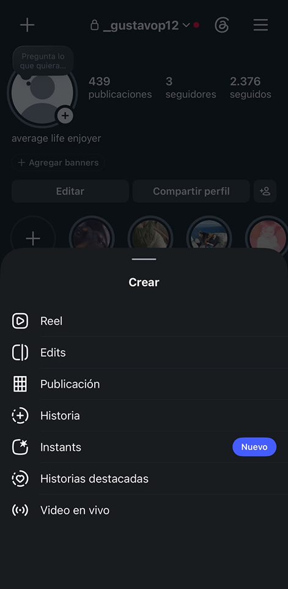
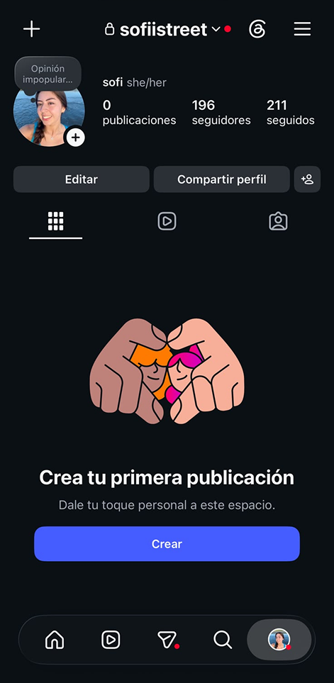
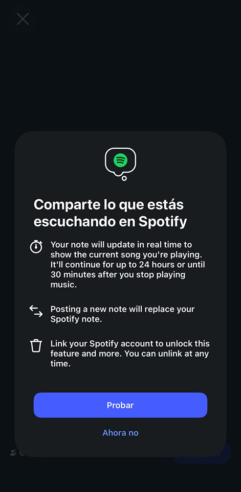
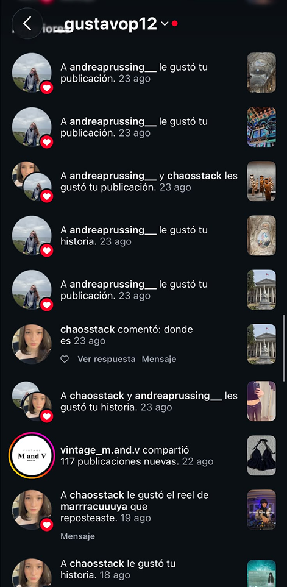
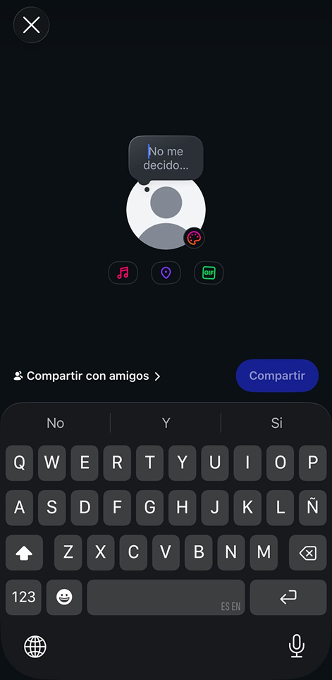
"Presume tu vida con los demás"
- Materialización técnica:Historias, notas, posts, instantáneas, notificaciones de likes y reacciones, contadores de visualizaciones e interacciones.
- Comportamiento que incentiva: Expectación por la reacción del resto, necesidad de capturar y editar contenido constantemente, estar pensando qué subir de manera recurrente, vivir una experiencia y pensar la mejor forma de registrarla y publicarla.
- Valores bajo los que opera: Expresión personal, individualismo (cultura del yo), reconocimiento.
- Actores beneficiados: Por un lado, sirve como medio de expresión personal para cada usuario y de conexión con su red de contactos, ya que permite mostrar aspectos de la vida sin la necesidad de un trato interpersonal directo. Pero, al mismo tiempo, también beneficia a la plataforma de instagram, porque incorpora nuevo contenido en la red, y por lo tanto, más interacción de los usuarios.
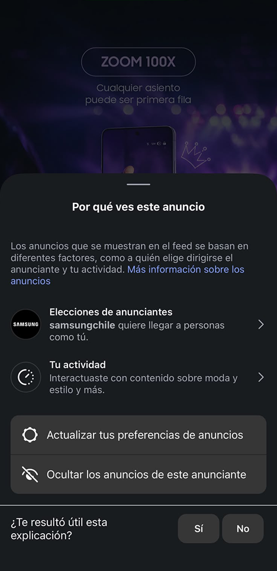
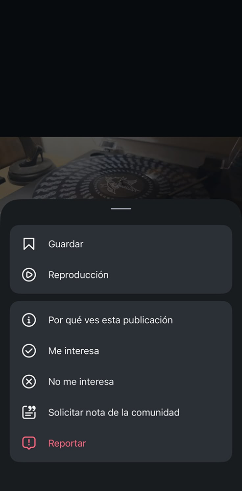
"Consume lo que te interesa"
- Materialización técnica: El botón de “no me interesa”, consultas ocasionales sobre si el contenido del reel resultó interesante, feed y sección de reels personalizados mediante algoritmos, gesto de deslizar inmediatamente.
- Comportamiento que incentiva: Scrolleo rápido por la intolerancia a lo que no genera interés o no corresponde a mis pensamientos, impaciencia, radicalización y polarización.
- Valores bajo los que opera: Individualización, continuidad del consumo, recolección de la atención.
- Actores beneficiados: Beneficia a Instagram y sus anunciantes, ya que, aunque para el usuario resulte más atractivo obtener contenido sobre sus gustos, el hecho de que sus recomendaciones sean personalizadas meticulosamente asegura mantener su atención y por lo tanto, seguir utilizando la aplicación.
Rediseño de Instagram
"No te pierdas ninguna novedad"
El problema detrás de las decisiones de diseño del script original está en que incita a los usuarios a mantenerse conectados a Instagram constantemente a costa de su tiempo, causando dependencia a revisar todas las nuevas actualizaciones posibles. La plataforma utiliza la atención de sus usuarios como herramienta para que se continúe interactuando con el contenido, incluso si esto implica el deterioro del lapso de atención de los individuos o una ansiedad asociada a la sensación de no estar al día.
"Préstale atención a lo que te interesa"
Como propuesta ante el script se realizaron tres rediseños que orientan el uso de la aplicación hacia la atención consciente sobre el contenido que los usuarios están visualizando, haciendo de la plataforma un medio pausado y menos sobre-estimulante, donde el individuo pueda retener la información que recibe de manera consciente.
En este sentido, las propuestas apuntan al resguardo del recurso de la atención, tomándolo como un aspecto fundamental en el desarrollo y bienestar de las personas. Los diseños trabajan desde valores asociados al cuidado de la atención, el consumo consciente y la paciencia. Con estos cambios, el usuario no se ve incentivado a seguir visualizando de forma automática, si no que se le facilita tomar decisiones sobre el tiempo que destina en la revisión de actualizaciones y qué novedades le interesan.
Por otro lado, para estos rediseños de la interfaz y experiencia de usuario, existen componentes propios de Instagram que se pierden, y que para usuarios acostumbrados al modelo normal de la aplicación podría resultar molesto. Algunos de estos elementos son la fluidez en el consumo de contenido y la inmediatez de reproducción, que desencadenan en el uso de la aplicación como una actividad poco estimulante y aburrida.
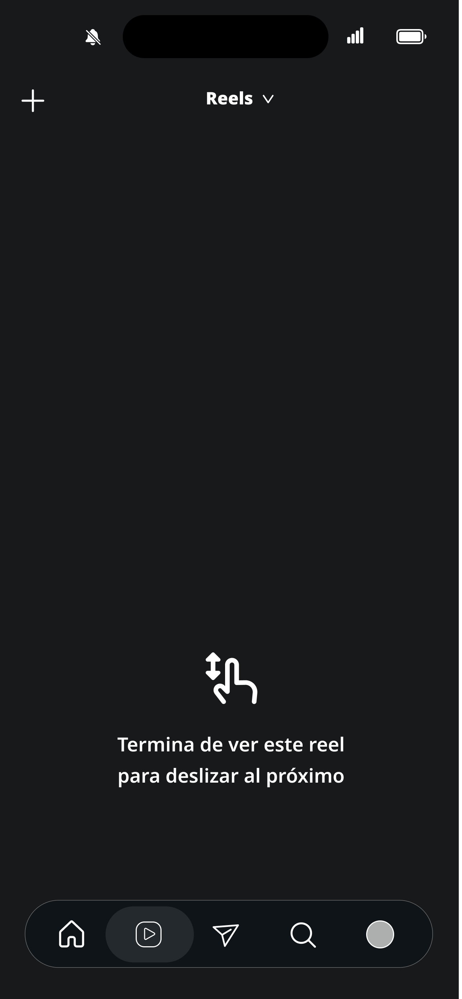
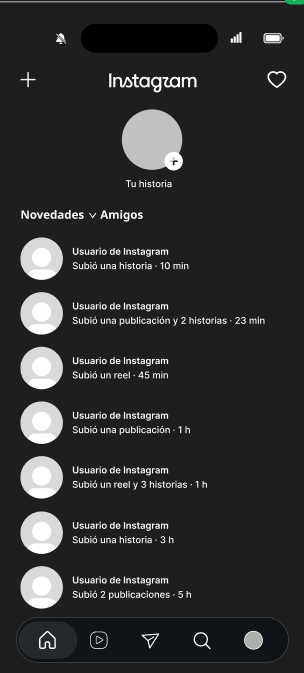
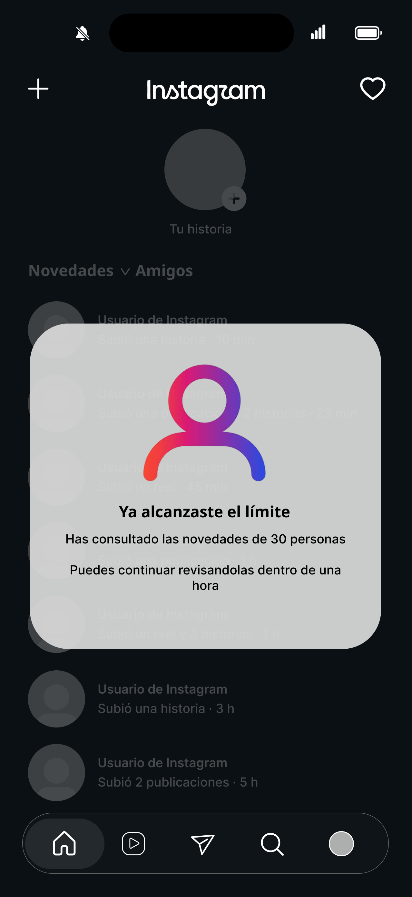